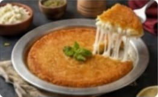
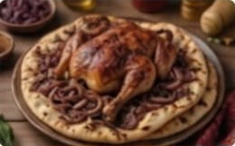
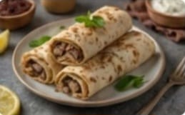
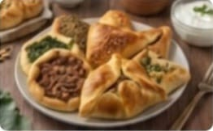
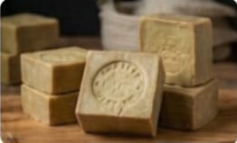
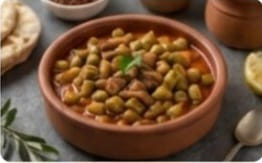

سفرة نابلس: دمج ساحر بين الأكل الفلاحي والحلويات العريقة
"يتميز المطبخ النابلسي بعراقة النكهات الخاصة، مستمدة من تراثها الزراعي والحلويات الأسطورية، وهو مطبخ يعتمد على الوصفات المتوارثة عبر القرون والمنتجات المحلية الطازجة"

المسخن النابلسي بالبصل والسما
الحلوى الأسطورية؛ جبن محلى مغطى بطبقة من عجينة الكنافة الذهبية والمقرمشة، تُقدم تُقدم ساخنة مع القطر، رمز المدينة الأول.

المسخن النابلسي بالبصل والسماق
أكلة تراثية أصيلة؛ دجاج محمر بالسماق على خبز طابون غني بالبصل المكرمل وزيت الزيتون البكر، تُقدم في الولائم الكبيرة.

لفائف المسخن النابلسي
نسخة حديثة من المسخن التراثي؛ قطع دجاج محمر مع بصل وسماق ملفوفة بخبز تورتيلا رقيق، وجبة سريعة ومشبعة.

فطاير نابلسية مشكلة
مقبلات شهية محشوة بحشوات متنوعة (لحمة مفرومة، سبانخ، زعتر)، تُعد وجبة خفيفة ومحبوبة، خاصة في أوقات التنزه.

صابون نابلسي من زيت الزيتون
ليس أكلة بل تراثاً؛ صابون طبيعي مصنوع يدوياً من زيت الزيتون البكر، يُجسّد صناعة المدينة التاريخية العريقة.

فخارة بامية باللحمة
طبق فلاحي غني؛ بامية طازجة مع قطع لحم ضأن ومرق طماطم مطبوخة بعناية في وعاء فخاري تقليدي.